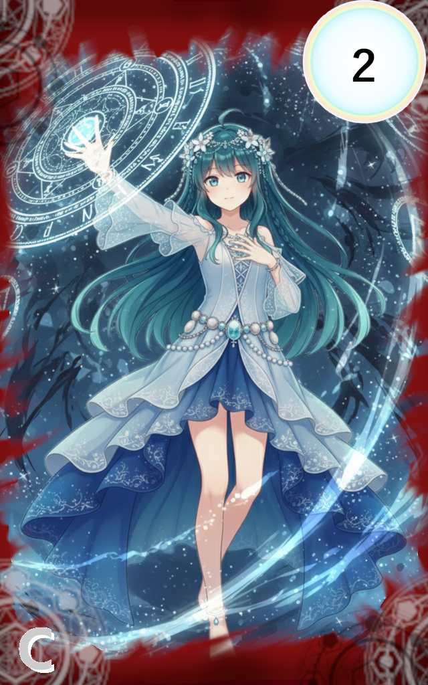

027_増幅する盾

レアリティ: コモン (C)
増幅する盾
クラス: アウラ・コンポルタ
コスト:2
タイミング:好きなタイミング
効果:
アルカステラ1体【装甲装甲:x：ダメージを受ける時、タップ状態に関わらずそのダメージを軽減します。
また、この軽減はスペルカードや支援スキルによるダメージにも適用されます。
軽減した場合、軽減した値分だけxの値が減少します。（例：3ダメージ軽減した場合、xが3減少）】+3を与える。
《共鳴:3》さらに共鳴数/2の値分【装甲】を与える。
《共鳴:6》エーテルを1点獲得する。
アルカステラ1体【装甲装甲:x：ダメージを受ける時、タップ状態に関わらずそのダメージを軽減します。
また、この軽減はスペルカードや支援スキルによるダメージにも適用されます。
軽減した場合、軽減した値分だけxの値が減少します。（例：3ダメージ軽減した場合、xが3減少）】+3を与える。
《共鳴:3》さらに共鳴数/2の値分【装甲】を与える。
《共鳴:6》エーテルを1点獲得する。
声が重なるたび、その魔法の盾は一層また一層と輝きを増していく。